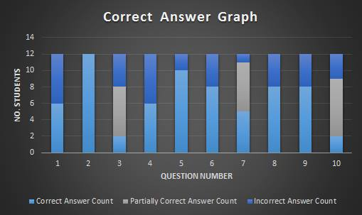

Analysis
The experiment consisted of 12 students. Each participant was tested in one of two ways; taking notes down on paper or taking notes down on a keyboard before taking a quiz. The experiment was successfully completed over all students. Data was extracted from the experiment based on the answers provided by the students. The data will serve as important information that will be analyzed, providing evidence on whether the use of personal computers improves their ability to retain information.
Question Analysis
Figure 2 provides a statistical graph, providing information on a number of students that answered a question correctly. The answers given by the students can vary, especially to the questions that require the student to type in their answer. Though, the research team accepted any answers that are relative to the expected answer. This is especially all questions excluding 1, 6 and 9. Answers can also be considered partially correct specifically towards questions that require two possibilities. For example, question 10 requires the student to name the first and last fact of the video. If a student successfully provides one of the correct answers, it’ll be considered partially correct. Answers to question 7 could also be considered partially correct due to how the student well the student answered the question.
Based on Figure 2, we can see that majority of students were able to answer most of the single answer questions. Question 2 shows that all students were able to successfully provide the correct answer. The content of question 2 has very little information to talk about, which could be the very reason why it maintained a 100% correction rate. Tri (n.d.) states in his blog that short-term memory is capable of holding information about 5 to 9 unrelated objects. In the case of this examination, students choose to retain simple information, such as single, short answered questions. This can be shown as 7 of the 10 questions hold a correction count of 50% or more. Though, many other factors may be included that explains this phenomenon.
Questions that require a more descriptive or multiple answers show a lower count in correct answers. Though, with the inclusion of partially correct answers, most students were able to answer the question partially correctly. Therefore, if the questions were treated as single answered questions, the correct answer count for questions 3 and 10 would increase substantially. The reason for these questions to have a low correct answer count is due to the possibilities of a student to answering the question correctly has been reduced. The more that is needed for the answer, the less likely for the student to achieve a fully correct answer. As mentioned previously, answers to question 7 can also be treated as partially correct. It requires a relatively descriptive answer as the wording of the answer is important to achieve a fully correct answer. With descriptive answers, it is entirely up to the examiner’s judgment on whether an answer is correct. Brown (2001) explains that descriptive answers are costly, slow and suffer from variation of human judgment. Table 1 shows the answers of students for question 7. The criteria for an answer to be fully correct is the inclusion of the words “replace”, “all” and “cell”. Students that fail to present all 3 keywords are classified as partially correct or incorrect. Though, an exception is given to Student A as he/she included the word “regenerate”, having a synonym of recreate. As a result, 5 students was successful to provide the required keywords whereas 6 students provided some of these words and 1 student provided the incorrect answer.
Table 1. All answers to question 7 including classification of its correctness.
Figure 2. Stacked plot rendition of the amount of students that got each question correct. 
Preference in Note Taking
For reliability of results from the experiment, the research team aimed to balance the students that use personal computers and long written notes. Though, majority of the students prefer the use of long written notes, especially when studying. Figure 1 shows the statistics of students that prefer the longhand and typed notes during lectures, the experiment and studying for exams. The graph shows that 7/12 students that partook on the experiment prefer to use longhand as oppose to typed notes. Though, they do not always use this method for other purposes such as lectures and studying for exams.
Figure 3. Histogram rendition of Note Taking Preference for the experiment, lectures and studying for exams.
Figure 4. Box plot rendition of score comparison between longhand and typed notes.
Figure 5. Bar chart that shows the difficulties of the test with regards to the prescribed material.
From the above statistics, the above graph (Figure 5) displays that there was a 23% increment of difficulty when finding the test hard while using a keyboard to note take when comparing it to participants who found the test hard using a pen paper. Accordingly, this evidentially shows that almost everyone that was using a keyboard to take notes thought that the quiz was hard, therefore supporting the main research question that people tend to hold retain information better when using handwritten notes when compared to a keyboard.
Furthermore, the reason behind this increment may be due to the fact that, traditionally people who try to retain information typically use hand written material instead of typing. Thus 50% of people that were experimented and found the test hard when using a keyboard, use handwritten material when trying to study or note take for a test, additionally, 90% of them also takes notes during lectures. The reasoning as to why they had difficulty with the test may be due to the fact that they traditionally use hand written notes to study before a test and for note taking during lectures.Consequently backing up this clause that note taking using pen and paper to retain information is better when compared to typing the notes out. Additionally, humans tend to withhold information better when one creates the motion within their hand, this is due to the human having to direct movement by thought instead of just having to push buttons, thus the information is more embedded into the human mind (Chemin, 2014). Consequently, this could have an effect on why participants found the test hard when using the keyboard as it does not stimulate this way of retaining information (Wax, 2015). As for the other 50% that found the test hard when having to type notes, the data shows that 90% of that 50% do not actually take notes when in lectures. When taking the last statement into account, this factor could be the reason behind them finding the test difficult as they don't have the same skills as someone who takes notes in the lecture to retain information.
Figure 6: This bar chart represents the time 4 random participants from both sides of test took to complete the test.
As shown above, the graph portrays that participants took longer to answer the questions when using pen and paper when compared to using a keyboard. Typically as stated in above statement about figure 6, you have a better recollection of memory when writing it down(Chemin, 2014). Therefore the longer periods could be due to the person trying to recollect and process what they have previously written down to study before answering the question. Whereas the people who used a laptop completed the test faster, thus the reasoning behind this may be due to the fact that the notes they took down about the video were only stored in their short-term memory. This may be due to the participant not actually having to perform any major cognitive process that would allow the participant to store information in the brain, although we can't tell if the participant used imagery to help store this information, it seems reasonable this was the probable cause as to why they took a shorter amount of time.
Figure 7. Correlation plot rendition of average score comparison. Arranged from left to right is most most overall
correct answer count to least overall correct answer count.
As you can see in the above linear Regression graph. It seems reasonable that you can make the prediction that using a pen and paper is the best way to retain information. The longhand regression line clearly shows a higher average correction rate of 0.8 when compared to the average correction rate of the typed regression line, that being 0.6. Taking this into account it evidently backs up our clause that using hand written notes is better than using a keyboard to retain information, Ideally having more participants and an even number of contributors may have lead to a better analysis and a more in-depth understanding as to why this relationship may have occurred, however given the data which was analysed and referring it to the above graph, it still seems reasonable for one to say that using pen and paper is the best way for one to retain information.
Conclusion
In conclusion, the above figures and analysis to go with the graph have enough detail to show that hand written notes are better for retaining information over a short period of time.